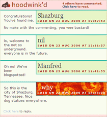

Hoodwink.d Nameplates & Rollups #
The busy and inaudible drone of the winkers. It’s just sort of a pit-pit-a-gfif-ppp off behind the scrim. Well, that noise, all that shuffling—they were actually working on a elevator-up-elevator-down theme called slidy slidy. And I embraced it. It smelled like baby’s breath.

Hoodwink.d 1.9 does too. Please deinstall then reinstall.
- Zero wink counts don’t show.
- Nameplates, not avatars.
- Which means: one background (URL) and one color (HEX).
- Rollup the wink sheet.
- Live preview your winks.
See, much less intrusive. Much fancier. It’s like prepubescence, where you don’t really trust Hoodwink.d with your vehicles or power of attorney, but you’ll see it cook its own fish sticks every once in awhile, which makes you go, “hey, look who’s cooking her own fish sticks.” Which scares hoodwink.d, who didn’t see you coming, and now tartar sauce is spilled all over your nurturing ways. My thanks to aanand and Asztal and ecmanaut for their carefree experiments!
Manfred
Must… find… perfect… nameplate!
Thijs
Are you keeping Manfred from his work again? I’m not paying the boy to draw pixelated art in the Gimp all day, dammit!
why
Someone should. He’s really fine at it!
aanand
MAN WHY YOU EVEN GOT TO DO A THING .
Alazoral
So what’s happening with hoodwinkd.user.rb?
Asztal
All these lovely changes and I have no internet connection :(
I’m posting through a wormhole right now, but it’s really tiring to keep these open.
evan
Hey, look who’s cooking their own fish sticks.
undees
What’s the way the cool kids are using hoodwink.d these days? mouseHole or GreaseMonkey? The former won’t install on Ruby 1.8.2, the stock Ruby that came with WonderBook (‘cause Mongrel requires newer). The latter won’t install on Firefox 2.0 RC1 without the nightly tools (and even with those, winks don’t show up).
What’s a Mac user to do?
nil
Greasey is good. Bring the fox back to a stable release ver.
technomancy
I’m getting some “this.gmSvc has no properties” crap as a Javascript error. Any suggestions?
(This is Firefox 1.5.0.4, Greasemonkey 0.6.4, and latest Hoodwink’d, but also happened with previous ones.)
Vagabond
Every time I try hoodwink.d since the demise of mousehole I encounter nothing but websites innocent of winking :(
camel
someone look out for a plastic baggie I lost recently